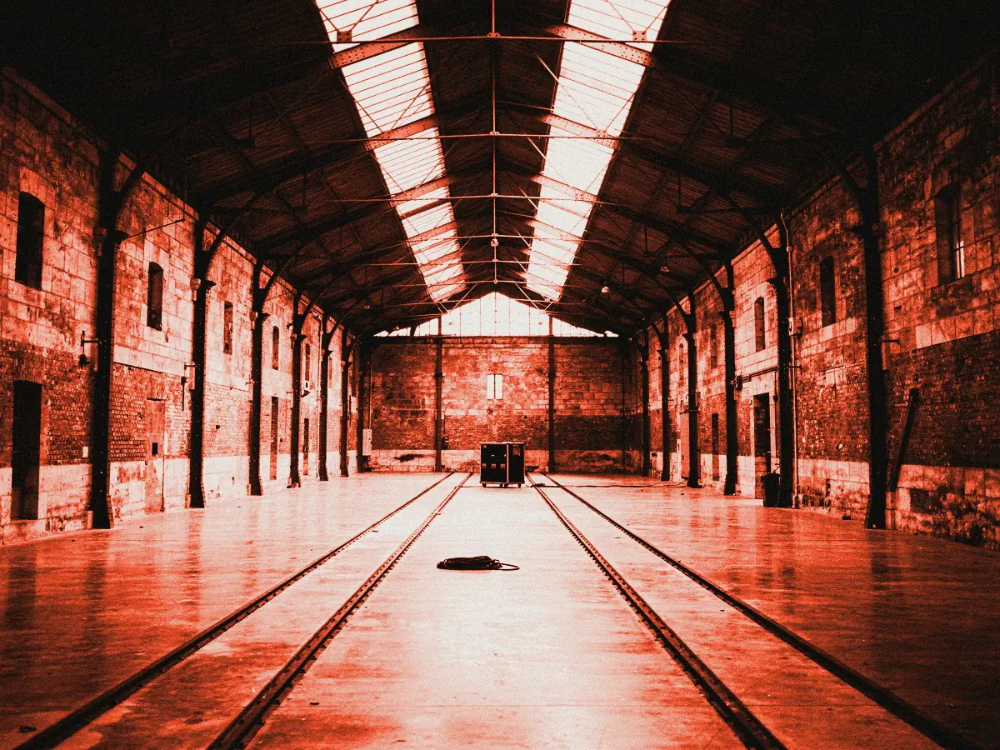
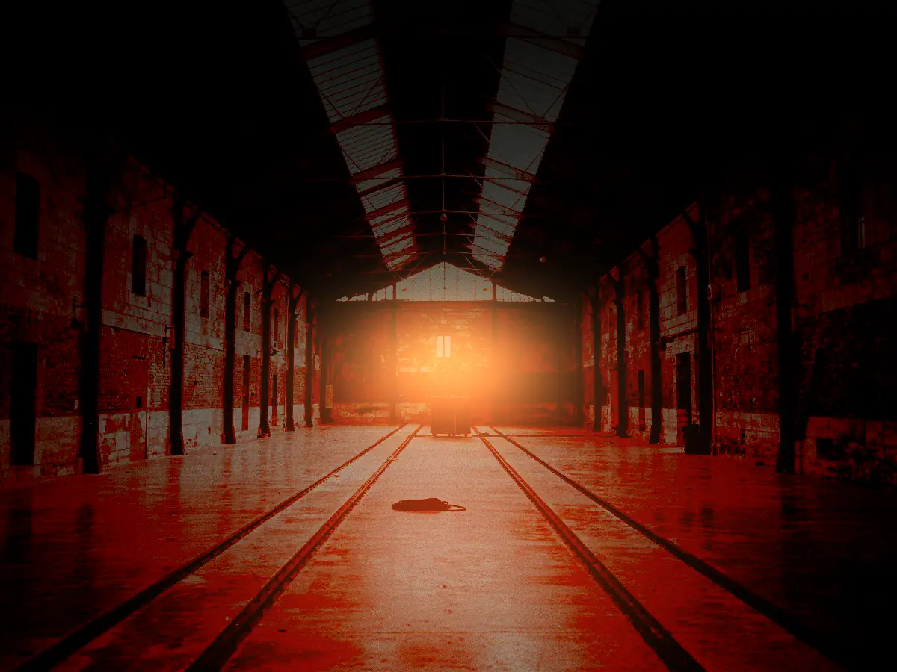

La halle, de jour et à la nuit tombée
Passez le pointeur (ou le doigt) sur la photo : l’encre découvre la soirée, puis sèche en quelques secondes. Démo : photo de l’exemple Tôle, la version du soir est la même prise retravaillée.


Passez la souris sur la photoGlissez le doigt sur la photo